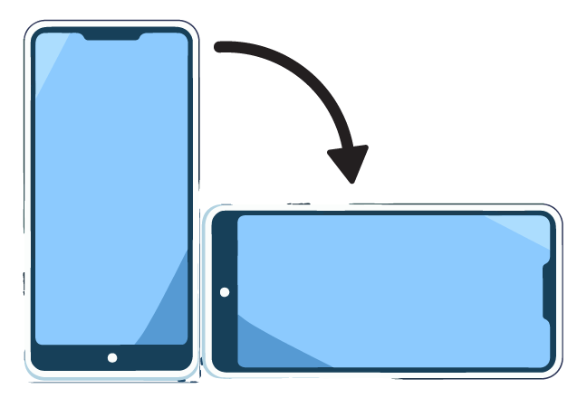
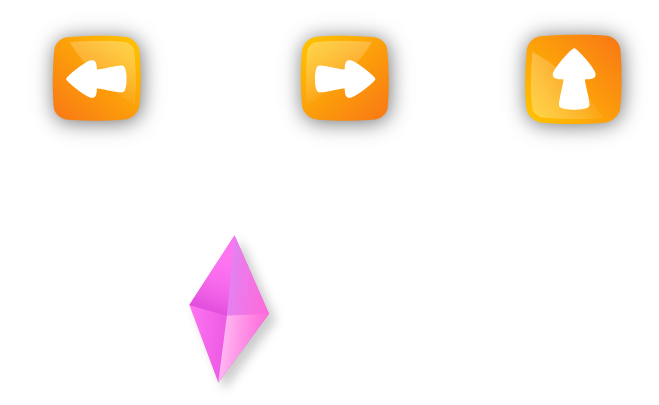
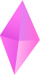

Ada Lovelace
Considerada la primera programadora de la historia (1843). Ella imaginó que las computadoras podrían ir más allá de los números y crear arte.

Esta experiencia está diseñada para jugarse en formato horizontal.
Usa las flechas para moverte y saltar.
Encuentra los diamantes sobre los cuadros para descubrir la
historia.


0/4
Considerada la primera programadora de la historia (1843). Ella imaginó que las computadoras podrían ir más allá de los números y crear arte.